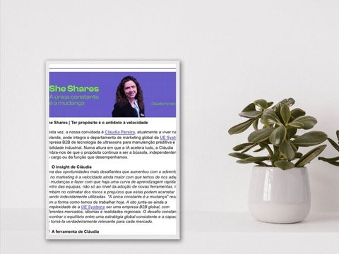

Marketing digital B2B
Estratégia, conteúdo, performance e marca para empresas que vendem a outras empresas. Do público-alvo à medição de resultados, com foco em quem decide a compra.
Para quemEquipas de marketing e vendas, gestores e empresários.
Olá! Sou a Cláudia, especialista em marketing digital B2B e formadora certificada com CCP. O ensino corre-me nas veias e a inteligência artificial aplicada ao marketing é hoje o meu foco.



Estratégia, conteúdo, performance e marca para empresas que vendem a outras empresas. Do público-alvo à medição de resultados, com foco em quem decide a compra.
Para quemEquipas de marketing e vendas, gestores e empresários.
Como usar ChatGPT, Claude, Gemini, Copilot, NotebookLM e Perplexity no trabalho diário: pesquisa, conteúdo, análise e planeamento. Com critério, sem perder a voz da marca.
Para quemProfissionais que querem ganhar tempo e qualidade com IA.
Construção de agentes em ChatGPT e Claude para as tarefas repetitivas do marketing, do primeiro pedido ao agente pronto a usar.
Comecei por aprender a contar histórias no jornalismo e foi o marketing que me fez perceber que, se não medirmos o seu impacto, de nada vale. Utilizo inteligência artificial todos os dias no meu trabalho e, como formadora certificada, ensino aquilo que pratico.
Dou formação em três áreas: marketing digital B2B, inteligência artificial aplicada ao marketing e agentes de IA. Cada formação parte de casos reais e tem prática em sala.
Presencialmente em Ourém, Fátima e Leiria, ou em live training online para todo o país. Os horários são pós-laborais e/ou ao fim de semana.
Em português e em inglês.
ChatGPT, Claude, Gemini, Copilot, NotebookLM e Perplexity. Nos agentes de IA, trabalho com ChatGPT e Claude.
É o Certificado de Competências Pedagógicas, emitido pelo IEFP, que habilita a dar formação profissional. Tenho-o e é por ele que me apresento como formadora certificada.
Preenche o formulário de contacto mais abaixo, com o nome, o email, a empresa ou entidade e a mensagem. Se já souberes o tema, o número de participantes e as datas, indica-os na mensagem.